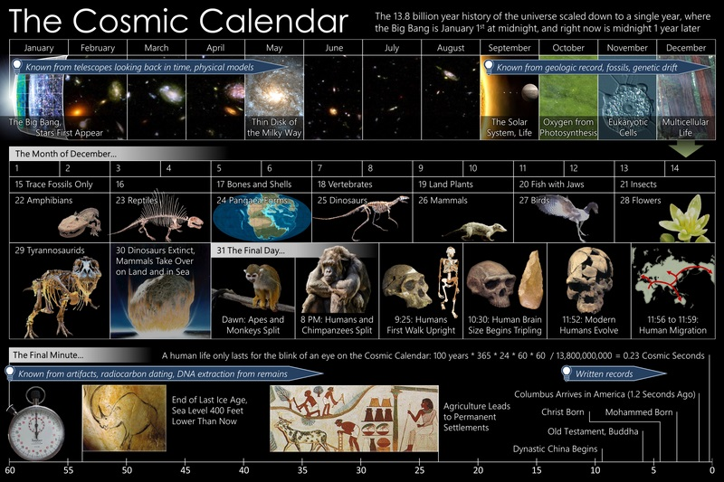

Космічні календарі — метод візуалізації історії Всесвіту, за яким 13,8 млрд років відображаються в масштабах одного календарного року.
Чому я обрав саме цю тему для сайта: Мені подобається астрономія, зірки, зоряне небо, та в приклад мені поставили сайт про планету Марс.
Як я вчився робити прикольні сайти. Особисто я навчався цьому місяці два, на його роботу я витратив близько 4 годин. Так от текст та фото знайшов в інтернеті, пошукав сайт з якого можна взяти приклад та почав робита. Працював у програмі "Code Pen" та "Notepad++" код написаний на HTML та CSS. Було цікаво робити цей сайт та і в будь якому разі це досвід.
Актуальність створення сайту будь-якого виду – донесення інформації до користувачів Інтернету. Насамперед сайт потрібен для того, щоб донести інформацію до широкого кола людей. Паперові носії інформації поступово йдуть із життя людей. Це не поганий спосід рекламувати свій бренд, або ж ви можете зробити свій інтернет магазин.
Як я вчився робити прикольні сайти. Особисто я навчався цьому місяці два, на його роботу я витратив близько 4 годин. Так от текст та фото знайшов в інтернеті, пошукав сайт з якого можна взяти приклад та почав робита. Працював у програмі "Code Pen" та "Notepad++" код написаний на HTML та CSS. Було цікаво робити цей сайт та і в будь якому разі це досвід.
Актуальність створення сайту будь-якого виду – донесення інформації до користувачів Інтернету. Насамперед сайт потрібен для того, щоб донести інформацію до широкого кола людей. Паперові носії інформації поступово йдуть із життя людей. Це не поганий спосід рекламувати свій бренд, або ж ви можете зробити свій інтернет магазин.

Згідно з календарем Карла Сагана, Великий вибух відбувся 1 січня, а теперішні події відбуваються в північ 31 грудня. У такому масштабі 1 місяць дорівнює 1 млрд років, 1 день — 37,8 млн років, 1 година — 1,58 млн років, а за 1 секунду проходить 438 років реального часу. Поточна секунда — широкий розвиток науки й техніки, поява світової культури, створення засобів, здатних знищити рід людський, перші кроки в освоєнні космосу і пошуки неземного розуму.
Tдні = 365 днів × 0,100/13,797 (1- T_Gya/13,797)


{kind=link}
Короткі відомості
Метод був створений Карлом Саганом. Уперше описаний у книзі «Дракони Едему» (1978). Застосовувався в науково-популярних телесеріалах «Космос: персональна подорож» (1980) (тоді вік Всесвіту вважався рівним 15 млрд років) та «Космос: подорож у просторі та часі» (2014), у якому Ніл Деграсс Тайсон вже використовував уточнений вік у 13,8 млрд років.Згідно з календарем Карла Сагана, Великий вибух відбувся 1 січня, а теперішні події відбуваються в північ 31 грудня. У такому масштабі 1 місяць дорівнює 1 млрд років, 1 день — 37,8 млн років, 1 година — 1,58 млн років, а за 1 секунду проходить 438 років реального часу. Поточна секунда — широкий розвиток науки й техніки, поява світової культури, створення засобів, здатних знищити рід людський, перші кроки в освоєнні космосу і пошуки неземного розуму.
Космічний рік
Космічний календар показує розвиток всесвіту і всіх подій на Землі в часовому масштабі — так, ніби всі події відбулися за один рік тривалістю 12 місяців або 365 днів: Дата року розраховувалася за формулоюTдні = 365 днів × 0,100/13,797 (1- T_Gya/13,797)
Космологія
{kind=link}
Еволюція життя на Землі
{kind=link}
Еволюція людини
{kind=link}
Початок історії
{kind=link}
Сучасна мить
{kind=link}
***
***